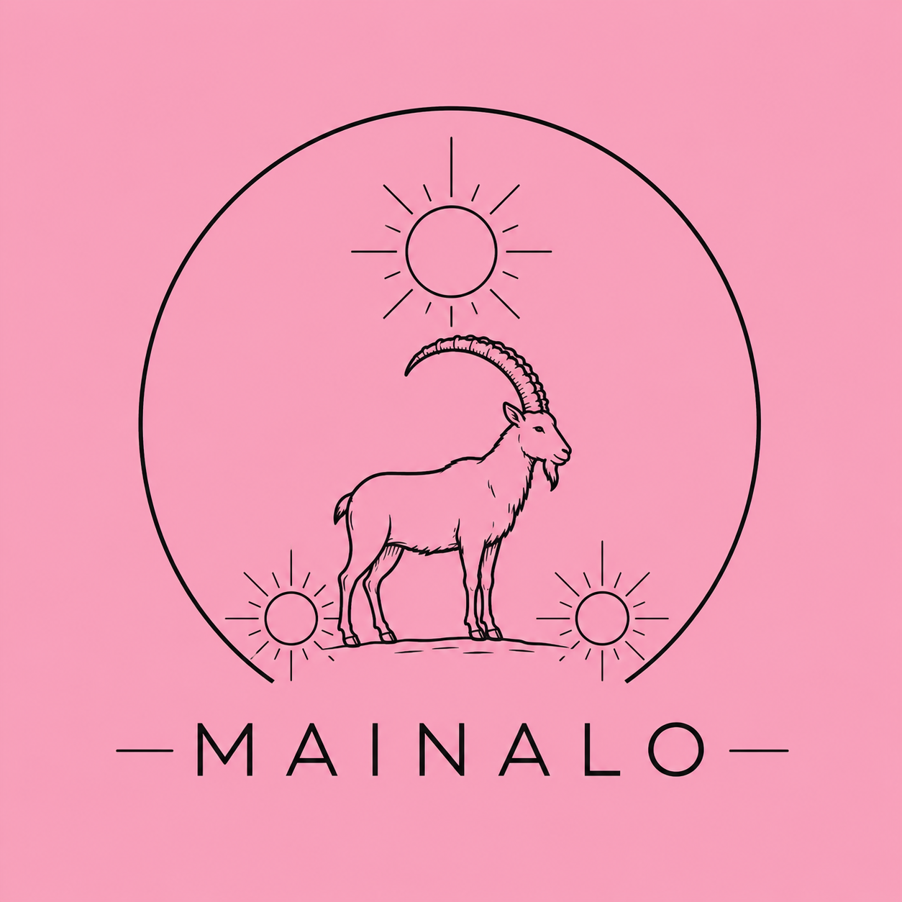

Walk the old paths
Guides, routes and quiet places worth slowing down for.
Experiences · Nature · Adventure
The Mainalon is an independent travel and outdoor project inspired by mountains, culture and meaningful journeys.
Explore
The symbol
The ibex and three suns are inspired by an ancient coin and reimagined as a simple modern mark for The Mainalon.
Explore
Guides, routes and quiet places worth slowing down for.
History, food, villages and the people who shape them.
Practical inspiration for independent journeys.
Featured story
A sample article layout is included in this website package. Replace it with your own writing and photography.
Read the story →